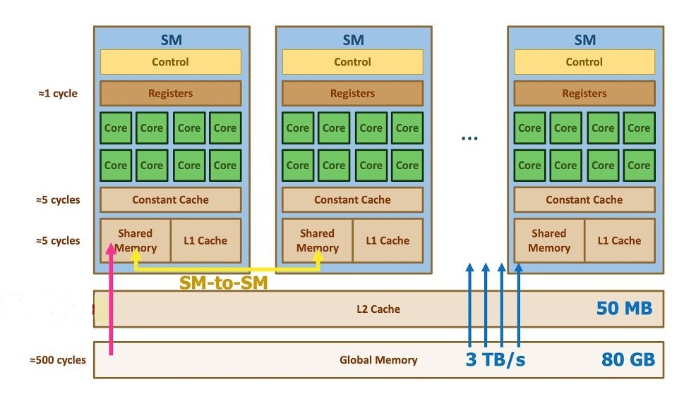
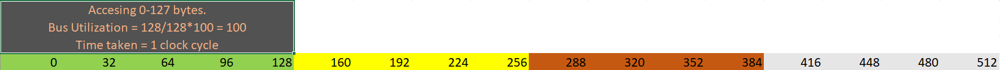
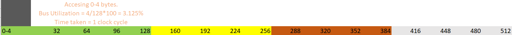

Instruction Dispatch and Memory#
This chapter comprises of:
Wrap And Wrap Scheduler.
Types of Memories.
Why coalesing matters?
Matirx Multiplication Using Shared Memory.
More About Shared Memory.
Wrap And Wrap Scheduler#
Hope you remember what Wrap scheduler is, it was defined in the previous chapter. Its defined here again,
Wrap Scheduler: Wrap scheduler simply put is the one which issues the instructions to the SM. It tells which instructions needs to be executed and when. Warp schedulers are dual issue capable. This means that the wrap scheduler can issue two instructions to the same SM in the same clock, if the two instructions do not depend on each other.
When the instructions are dispatched to the SM, inside the SM it is executed by the threads. One instruction dispatched by the scheduler is always executed by 32 threads. Meaning a single instruction is always executed by 32 threads, a group of 32 threads is called a wrap. If we launch a kernel with 14 threads add_vectors<<<1,14>>>(arguments), then 32 threads(a wrap) will be used, extra threads will do the work but after execution the rest 18 threads will throw away the result. If we launch 36 threads add_vectors<<<1,36>>>(arguments), then 64 threads(two wraps) will be used, extra threads will do the work but after execution the rest of the threads will throw away the result.
A threadblock is a collection of warps (up to 32 of them). All of the threads in the same threadblock will run on the same SM. Multiple threadblocks may run on the same SM or may run on different SMs, the hardware attempts to balance the work among all available SMs.
Refernce to the link from which the above sentence about the threadblock was taken from
Types of Memories#
For programming purpose it is majorly enough as far I have seen to know about these types of memory in the GPU:
Global Memory: This like the DRAM. All the threads from all the SM’s have access to this memory. When a thread accesses this memory, the processing time is large. So this is a costly operation.
__global__ void vector_add(int *A,int *B,int *C,int n){
...
}
The arrays A, B, and C are stored in the global memory. When a thread tries to access an element of one of these arrays, it reaches out to global memory which is a costly operation in terms of time consumed.
L2 cache: This is cache memory available globaly to all the threads from all the SM. This is a cache used to speed up the reading of data from Global memory.The memory access takes less time than global memory.
L1 cache: This is a per thread block resource. The threads inside the same thread block share this memory. We don’t have control over what data is stored here, it like LRU. We cannot mannually modify the data stored here.The memory access takes less time than L2 cache.
Shared Memory: This is also a per thread block resource. The threads inside the same threadd block share this memory. We as a programmer can decide what data is stored here. We can read and modify this data. This is the fastest memory, but sadly it has very less storage capacity. Later we will see how to make use of this in Cuda C++.
The difference between Shared memory and L1 cache is that L1 cache is a cache shared by the threads in a block. For example suppose we have launched a kernel with 3 blocks per grid and 32 threads per block.Assume A is an array stored in the global memory and none of the threads from block 0 have accessed this memory. In the block 0, suppose the thread 0 reads the global memory of say A[0], then this(A[0] data) will be stored in the L1 cache. In the next clock cycle say thread 2 of block 0(same block) wants to access the A[0], it does not have to go to the global memory because it is stored in the L1 cache. L1 is like a LRU for the threads from the same threadblock.
Shared memory is a very limited memory allocated to the threads of the same thread blocks. Threads within a block can read and write into this. Assume for understanding this concept that we have kernel in which the threads from a block have to access A[0] in subsequent cycles and add 1 to it. This is what happens(All the thread mentioned below are from the same block).
cycle 1: Thread 0 tries to acccess A[0]. Since its the first time L1 does not have A[0], so A[0] is accessed from the global memory, the data is also stored in the L1 cache. Now Thread 0 adds 1 to it, since the data is modified the L1 cache is invalidated. Now thread 0 has to reach the global memory to store it.
cycle 2: Thread 1 tries to acccess A[0]. Since its L1 has invalid A[0] data, A[0] is accessed from the global memory, the data is again stored in the L1 cache. Now Thread 1 adds 1 to it, since the data is modified the L1 cache is invalidated. Now thread 0 has to reach the global memory to store it.
cycle 3: Thread 2 tries to acccess A[0]. Since its L1 has invalid A[0] data, A[0] is accessed from the global memory, the data is again stored in the L1 cache. Now Thread 2 adds 1 to it, since the data is modified the L1 cache is invalidated. Now thread 0 has to reach the global memory to store it.
As you can see the global memory is accessed many times, which is a costly operation. This is where shared memory is useful, since we can manually decide what can be stored here and this memory is fast.
cycle 1: Thread 0 tries to acccess A[0]. Since its the first time L1 does not have A[0], so A[0] is accessed from the global memory, the data is also stored in the L1 cache. Now Thread 0 adds 1 to it, since the data is modified the L1 cache is invalidated. Now instead of storing the result in the global memory, since we know the other threads will use this, we can store it manually(write code such a way) in the shared memory. So thread 0 stores it in a shared memory.
cycle 2: Thread 1 tries to acccess A[0]. Since its L1 has invalid A[0] data, A[0] is accessed from the shared memory. Now Thread 1 adds 1 to it, stores it in the shared memory.
cycle 3: Thread 2 tries to acccess A[0]. The data is in shared memory, thread 2 reads from it. Now Thread 2 adds 1 to it, stores it in the shared memory.
Little bit about L1, L2 and global memory working
Suppose we launch a kernel with 32 threads and 2 thread blocks. Initially L1 and L2 caches are clear. Suppose Thread 0 from block 0 access A[0] from global memory. Since L2 does not have it, the data will be stored in L2 and in L1(L1 of the thread block 0). If in the next cycle if thread 0 from block 1 accesses A[0] since it is present in the L2 cache it will read from it and also cache the data in the L1 cache of its thread block.
Figure depicting the different types of Memories. Please note that the numbers provided in th fig below are only to give an idea about the realtive memory capacity and speed. 
Why coalesing matters?#
Remember that a instruction is issued wrap wide(32 threads).A single Memory access intruction will also be issued for 32 threads at once. Assume that there are two thread block, and 32 threads per block. The Address bus for accessing the global memomry is 128 bytes wide. The global memory is from 0-512 bytes. Lastly assume that the address bus takes 1 clock cycle to transfer the data.
*Scenario one: *
Each Thread in block zero wants to access 4 bytes of contigious memory from 0-127 bytes. Threads need not access it orderly, it can be like this, thread 0 accesing 2-5 bytes, thread 1 accessing 0-1 and 6-7 bytes etc, but 32 threads together access 0-127 bytes. In this case since 0-127 bytes are contigious it will fit in the address bus. So total time will be 1 clock cycle. Total bytes transferred 128, out of which asll 128 bytes are used. Bus utilization = 128/128*100 = 100%

Scenario two:
Each Thread in block zero wants to access the same 4 bytes of memory from 0-3 bytes. In this case since 0-4 bytes are contigious it will fit in the address bus. SO total time will be 1 clock cycle. But the address bus utiliazation is not full since only 4 bytes of useful data is fetched by the 128 bytes address bus. So bus utiliazation = 4/128*100 = 3.125%.

Scenario three:
Each Thread in block zero wants to access 4 bytes of contigious memory from 96-223 bytes. In this case since 96-127 fall under one bus, 127-224 fall under another. So we need two cycles for the bus to transfer the data.. SO total time will be 2 clock cycle. Total bytes transferred 128*2 = 256, out of which only 128 bytes are used(223-96+1). Bus utilization = 128/256*100 = 50%.
Scenario four:
32 Threads in block 0, accesses 96-233 bytes in first. To do this it will take 2 cycles. Now 32 threads in Block 1,accesses 0-96 bytes. Remember the L2 cache, since threads in block one already accessed 0-127 and 128-255 bytes of memory, this data will be present in L2 cache. If we consider overall the bus utilization will be 100% and the total time taken will be litte over 2 clock cycles.
Scenario five:
32 Threads from block 0 access 128 bytes spread across 0-512 bytes.For example
Threads 0 - 8: access 0 - 31 bytes, Threads 8 - 16: access 128 - 159 bytes, Threads 17 - 23: access 256 - 287 bytes, Threads 24 - 31: access 480 - 511 bytes.
In this scenario we get bus utilization of 4%. And total time taken is 4 clock cycles.
Scenario 5 is why coalesing matters. A warp should access within a contiguous region, ie consecutive threads accessing consecutive memory addresses.
Some optimization tips to achieve maximum efficiency.
1) Strive for perfect coalescing
(Align starting address - may require padding)
A warp should access within a contiguous region.
2) Have enough concurrent accesses to saturate the bus
Process several elements per thread.
Multiple loads get pipelined.
Indexing calculations can often be reused.
Launch enough threads to maximize throughput
Latency is hidden by switching threads: By making sure that we utilize all the threads at any given point we can avoid any further latency.
3) Use all the caches.
The above points are taken from This Lecture.
More info:
During the time when a thread is executing memory read instruction, it can also execute other operations. SO basically a thread can request for a data and then go do some other work while the data is being loaded.
Remeber that wrap scheduer is a dual issue. When the adjacent instructions are independent, scheduler may issue both these intructions to make sure that the threads stay busy. Compiler will try to find these kinds of instructions in the program and try to group them together, by reordering certain instruction to optimise everything.